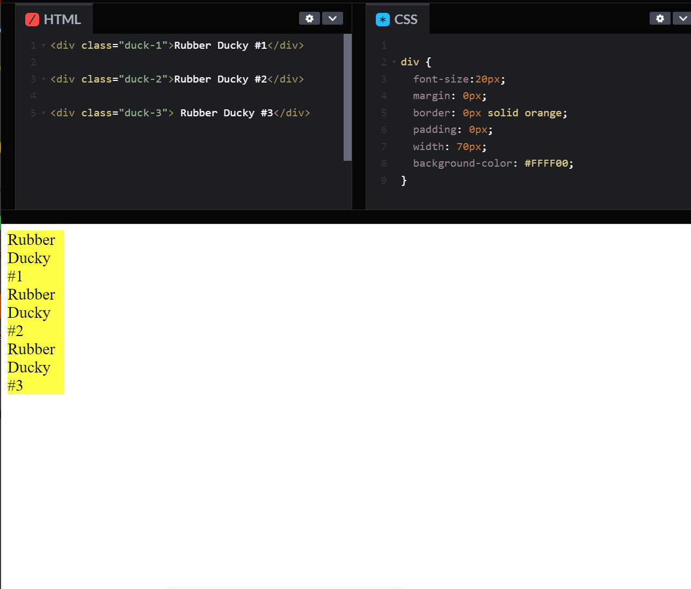
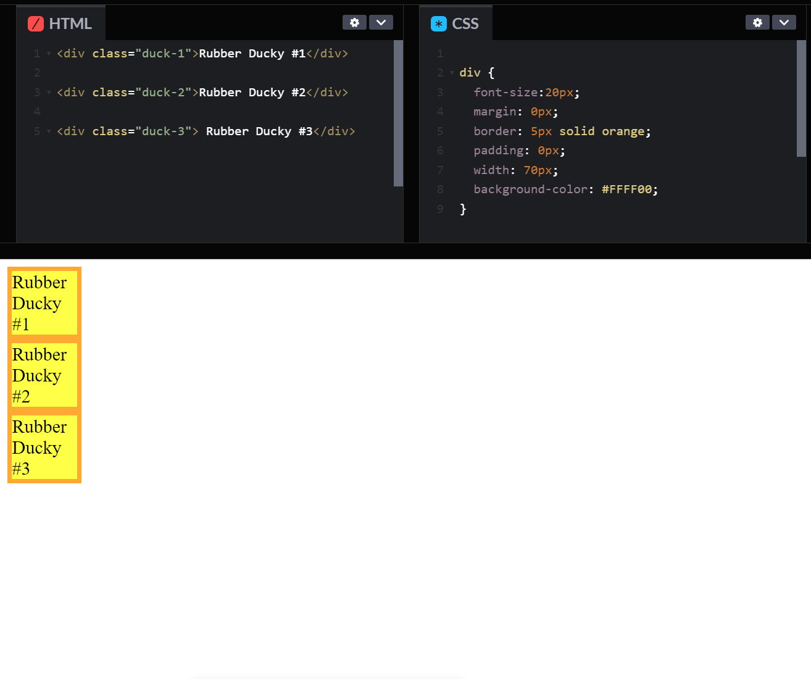
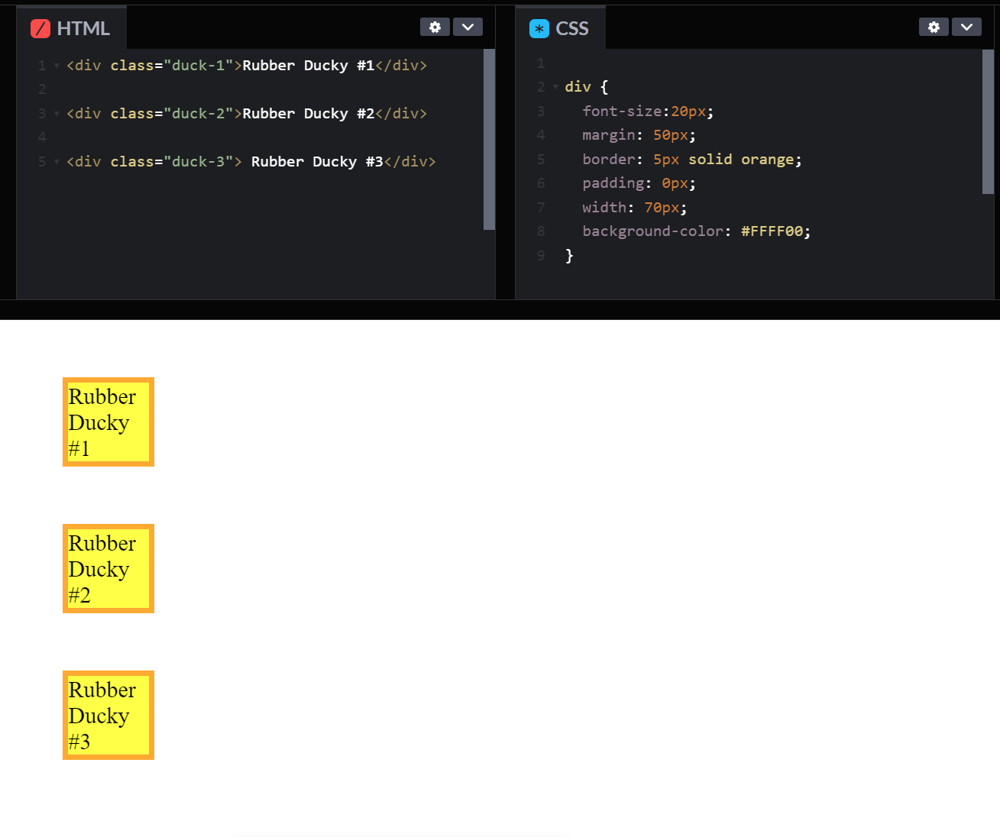
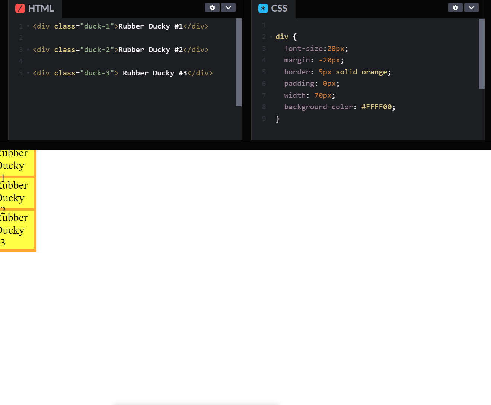
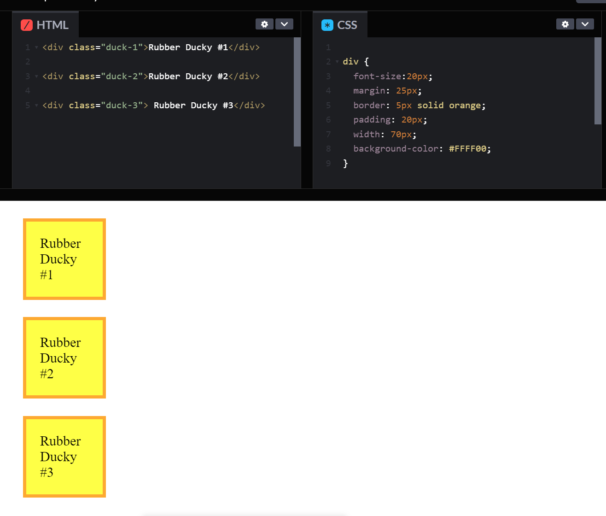

Web Dev Blog

Sprint 2 Blog
What is the difference between Margin, Border, and Padding?
Intro
To begin, let's think about some rubber duckies. In the image below, we have an aerial view of the duckies sitting all in a line along the edge of a pond. To a web developer, the rubber duckies are equivalent to a website's content (like images and text), and the pond is equivalent to the viewport (the user's viewable area of a web page).
Border
The rubber duckies decide to go for a swim (yes, they are magic rubber duckies with thoughts and feelings). Since the weather is really bad, they decide to put on their life jackets. In the image below, the life jackets are orange, and to a web developer, they represent a border around their website content. You can see that each life jacket fits snugly around each ducky.
Margin
As they hop into the pond, the duckies decide to spread out. The space between them is the water in the pond. For a web developer, this negative space is called a margin. The larger the margin number, the more negative space there will be between blocks of content of a website.
A big gust of wind comes along and knocks the duckies back to the edge of the pond. They are now laid out like overlapping domino tiles. To a web developer, a negative number in margin allows content to overlap. This can be a desired effect, when used artistically (unlike below).
Padding
The flustered duckies go back into the pond and swim away from each other again. Now soaked from the southerly weather, they puff up their feathers to get comfy. In the image below, the increase in space between the rubber ducky text and their life jacket border represents their puffed up feathers. To a web developer, these puffed up feathers represent the padding of an object. This padding will not spill out past the border. The border sits between the padding and the margin, just like the life jacket rests between the ducky's puffed up feathers and the water.
Special thanks to https://codepen.io/pen/ for their helpful tool which allowed me to create the example images above.